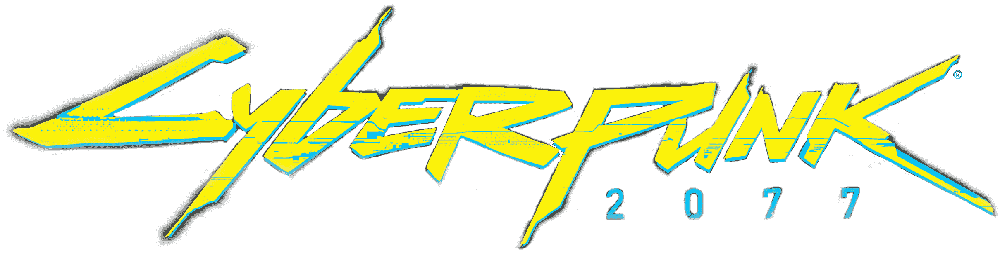
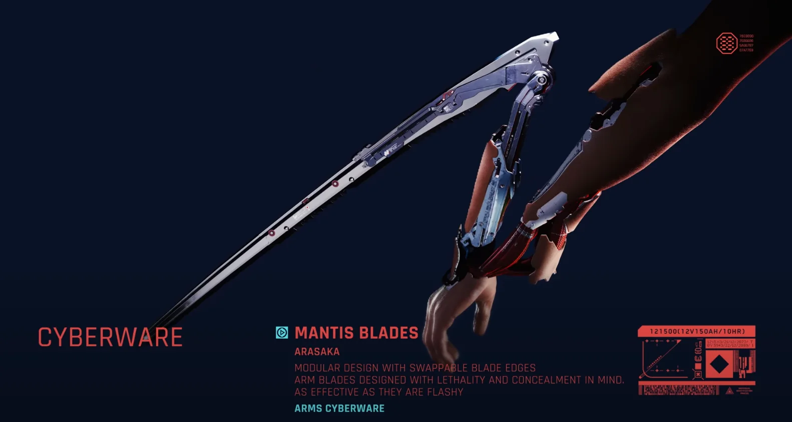
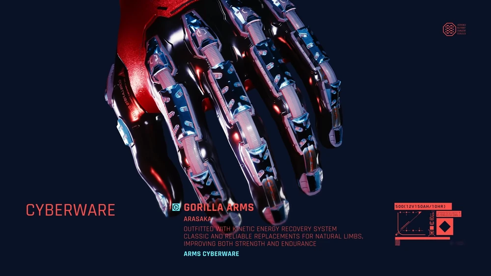
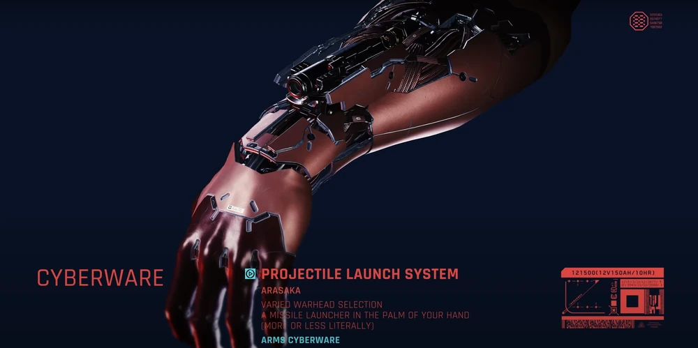
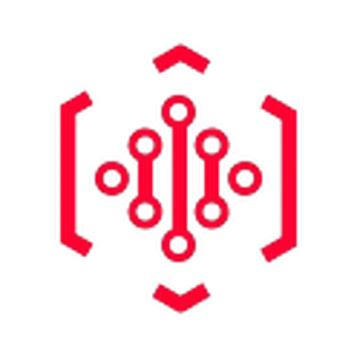
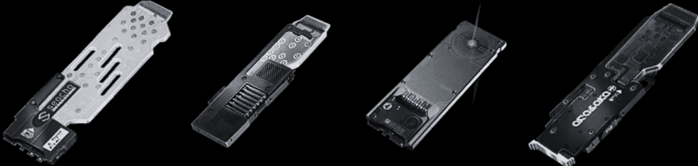
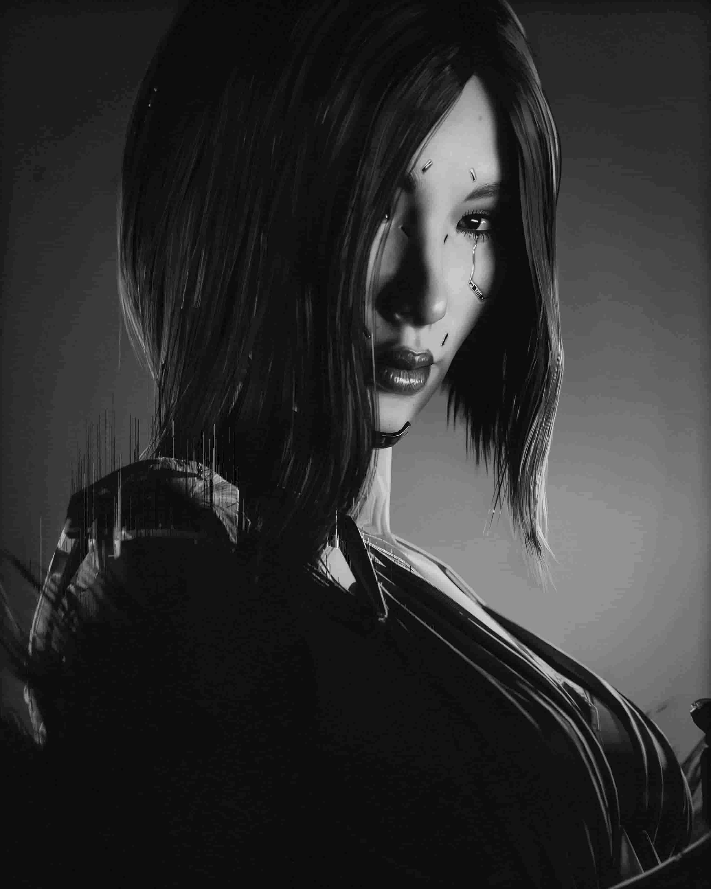

CYBERWARE
Half human - Half robot
Half human - Half robot

Is the term used to describe cybernetic technology which is grafted in or onto a living body. Even though cybernetic prosthetics were originally developed for practical and medical purposes, they've since become a matter of lifestyle choice. Cyberware has become as commonplace as tattoos and jewelry. The reasons for installing it are many and varied, including simple tech upgrades, combat enhancements, and even fashion statements.
Implant components can degrade over time, and minute changes in a person's body chemistry can affect precision, response times, and overall functionality. Even the nanites in some forms of bioware must be occasionally recalibrated to ensure continued physiological compatibility.




Netrunners are savvy hackers with a cybernetically augmented interface system implanted into their bodies. By using their brain-computer interface implants, they roam the Internet, looking for systems to hack and information to sell to fixers. Although anyone can enter the Net:
Most people can't use the "Menu." The Menu is a group of Applications (Apps) that are Interface programs that allow a Netrunner to Locate Remote, Run Software, Control Remote, LDL Link, Load, Create, and Delete.

Netrunners use Cyberdecks to "jack in" to the Net, which allows them to interact with the Net in a far quicker and more intuitive way than a keyboard would allow. Netrunner mercenaries are typically at odds with NetWatch, making browsing cyberspace even more difficult and dangerous than it already is. Corporations typically have their own Netrunners working for them to make sure that their Data fortresses remain secure. Meanwhile Mercenaries can be hired for specific gigs.
